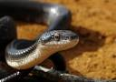
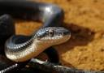
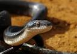

Mushandike College of wildlife manegement was established in 1981 and was officially opened by the Minister of Natural Resource. The institute is wholly owned and funded by Zimbabwe Parks and Wildlife Manegement Authority.The college is accredited by the Higher Education Examination Council of Zimbabwe. The college is located in Masvingo.
since its establishment the college has trained many students under wildlife manegement. As a wildlife manegement college aims is to produce highly trained wildlife managers and officers aimed in protecting and consenving and endangered species for example Rinho;pangolin and many others.
Mushandike college of wildlife manegement is not just a college it is also offer other services; like conference facilities camping sites lodges and sporting facilities to its gust,at an affodable price
The Mushandike college is also surrounded by the mushandike dam , which gives the college a more competitive place for tourism attraction. The dam is not only responsiable for tourism ; but for many other actives, for example fish farming, irrigation,and water supply.
Mushandike college is located in a sanctuary, and is responsiable for the consenving of wildlife there are many different species of animals and some of them are cheetah;snakes;enland antlope and manymore



 Mushandike college is located in a sanctuary, and is responsiable for the consenving of wildlife there are many different species of animals and some of them are cheetah;snakes;enland antlope and manymore

Mushandike college is located in a sanctuary, and is responsiable for the consenving of wildlife there are many different species of animals and some of them are cheetah;snakes;enland antlope and manymore
